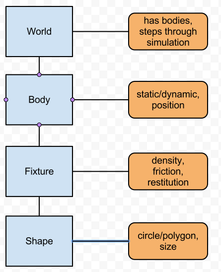
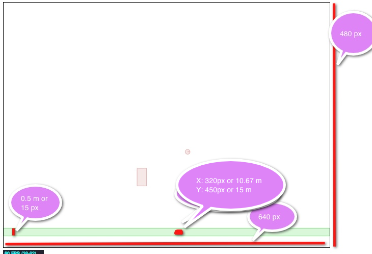
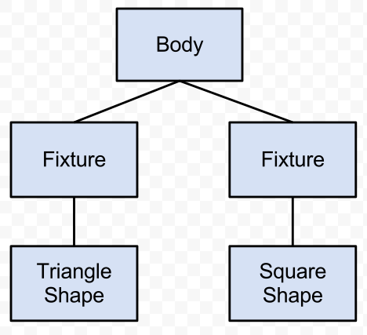
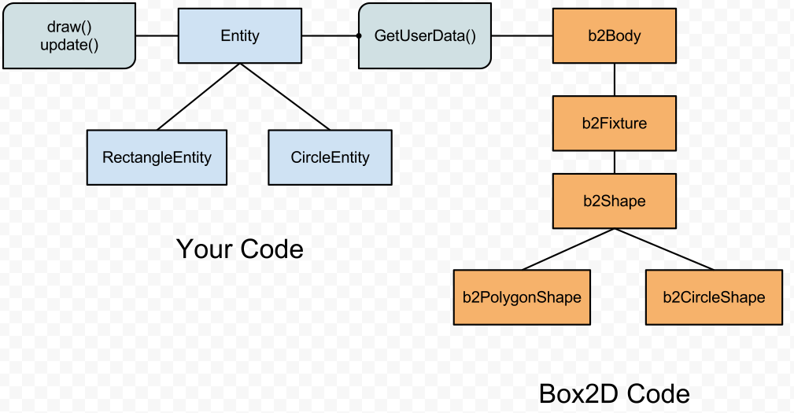
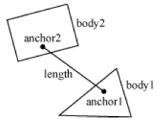
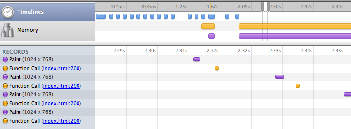

Intro to Box2D
physics simulations for HTML5 games
Seth Ladd
Sept 23, 2011
Seth Ladd
Sept 23, 2011
// http://paulirish.com/2011/requestanimationframe-for-smart-animating/
window.requestAnimFrame = (function(){
return window.requestAnimationFrame ||
window.webkitRequestAnimationFrame ||
window.mozRequestAnimationFrame ||
window.oRequestAnimationFrame ||
window.msRequestAnimationFrame ||
function(/* function */ callback, /* DOMElement */ element){
window.setTimeout(callback, 1000 / 60);
};
})();

world = new b2World(
new b2Vec2(0, 10) // gravity vector
, true // allow sleeping bodies
);
var SCALE = 30; // 30 pixels to 1 meter
var fixDef = new b2FixtureDef;
fixDef.density = 1.0;
fixDef.friction = 0.5;
fixDef.restitution = 0.2;
var bodyDef = new b2BodyDef;
//create ground
bodyDef.type = b2Body.b2_staticBody;
// positions the center of the object (not upper left!)
bodyDef.position.x = canvas.width / 2 / SCALE;
bodyDef.position.y = (canvas.height / SCALE) - 1;
fixDef.shape = new b2PolygonShape;
// half width, half height.
fixDef.shape.SetAsBox((canvas.width / SCALE) / 2, 0.5 / 2);
world.CreateBody(bodyDef).CreateFixture(fixDef);

bodyDef.type = b2Body.b2_dynamicBody;
fixDef.shape = new b2CircleShape(
Math.random() + 0.1 //radius
);
bodyDef.position.x = Math.random() * 25;
bodyDef.position.y = Math.random() * 10;
world.CreateBody(bodyDef).CreateFixture(fixDef);
bodyDef.type = b2Body.b2_dynamicBody;
fixDef.shape = new b2PolygonShape;
fixDef.shape.SetAsBox(
Math.random() + 0.1 //half width
, Math.random() + 0.1 //half height
);
bodyDef.position.x = Math.random() * 25;
bodyDef.position.y = Math.random() * 10;
world.CreateBody(bodyDef).CreateFixture(fixDef);
//setup debug draw
var debugDraw = new b2DebugDraw();
debugDraw.SetSprite(document.getElementById("c").getContext("2d"));
debugDraw.SetDrawScale(SCALE);
debugDraw.SetFillAlpha(0.3);
debugDraw.SetLineThickness(1.0);
debugDraw.SetFlags(b2DebugDraw.e_shapeBit | b2DebugDraw.e_jointBit);
world.SetDebugDraw(debugDraw);
function update() {
world.Step(
1 / 60 //frame-rate
, 10 //velocity iterations
, 10 //position iterations
);
world.DrawDebugData();
world.ClearForces();
stats.update();
requestAnimFrame(update);
}; // update()
var points = [{x: 0, y: 0}, {x: 1, y: 0}, {x: 0, y:2}];
for (var i = 0; i < points.length; i++) {
var vec = new b2Vec2();
vec.Set(points[i].x, points[i].y);
points[i] = vec;
}
this.fixDef.shape = new b2PolygonShape;
this.fixDef.shape.SetAsArray(points, points.length);
this.bodyDef.position.x = 5;
this.bodyDef.position.y = 5;
this.world.CreateBody(this.bodyDef).CreateFixture(this.fixDef);


var entity = "4": {id: 4, x: 10, y: 10, polys: [
[{x: -1, y: -1}, {x: 1, y: -1}, {x: 1, y: 1}, {x: -1, y: 1}], // box
[{x: 1, y: -1.5}, {x: 2, y: 0}, {x: 1, y: 1.5}] // arrow
]};
for (var j = 0; j < entity.polys.length; j++) {
var points = entity.polys[j];
var vecs = [];
for (var i = 0; i < points.length; i++) {
var vec = new b2Vec2();
vec.Set(points[i].x, points[i].y);
vecs[i] = vec;
}
this.fixDef.shape = new b2PolygonShape;
this.fixDef.shape.SetAsArray(vecs, vecs.length);
body.CreateFixture(this.fixDef);
}

ctx.save();
ctx.translate(this.x * SCALE, this.y * SCALE);
ctx.rotate(this.angle);
ctx.translate(-(this.x) * SCALE, -(this.y) * SCALE);
ctx.fillStyle = this.color;
for (var i = 0; i < this.polys.length; i++) {
var points = this.polys[i];
ctx.beginPath();
ctx.moveTo((this.x + points[0].x) * SCALE,
(this.y + points[0].y) * SCALE);
for (var j = 1; j < points.length; j++) {
ctx.lineTo((points[j].x + this.x) * SCALE,
(points[j].y + this.y) * SCALE);
}
ctx.lineTo((this.x + points[0].x) * SCALE,
(this.y + points[0].y) * SCALE);
ctx.closePath();
ctx.fill();
ctx.stroke();
}
ctx.restore();

joint.Initialize(body1, body2, body1.GetWorldCenter(), body2.GetWorldCenter());
joint.frequencyHz = params['frequencyHz']; // optional, less than half of time step
joint.dampingRatio = params['dampingRatio']; // optional, 0 - 1
this.world.CreateJoint(joint);
(pic from Box2d manual)
var joint = new b2RevoluteJointDef();
// both body1 and body2 already in correct position
joint.Initialize(body1, body2, body1.GetWorldCenter());
joint.motorSpeed = params.motorSpeed; // negative for opposite direction
joint.maxMotorTorque = params.maxMotorTorque;
joint.enableMotor = true;
this.world.CreateJoint(joint);
ApplyForce - slowly over time, pushingApplyImpulse - immediate, hit by a bat
bTest.prototype.applyImpulse = function(body, degrees, power) {
body.ApplyImpulse(new b2Vec2(Math.cos(degrees * (Math.PI / 180)) * power,
Math.sin(degrees * (Math.PI / 180)) * power),
body.GetWorldCenter());
}
BeginContactEndContactPreSolve - can override the contact herePostSolve - includes the impulse
var listener = new Box2D.Dynamics.b2ContactListener;
listener.BeginContact = function(contact) {
console.log(contact.GetFixtureA().GetBody().GetUserData());
console.log(contact.GetFixtureB().GetBody().GetUserData());
};
this.world.SetContactListener(listener);
listener.PostSolve = function(contact, impulse) {
var impulseValue = impulse.normalImpulses[0];
if (impulseValue < 0.1) return;
var object = contact.GetFixtureA().GetBody().GetUserData();
object.applyHit(impulseValue);
};
worker = new Worker('physics.js');
// bootstrap box
worker.postMessage({'cmd': 'bodies', 'msg': world});
// get updates from worker
worker.onmessage = function(e) {
bodiesState = e.data.worldBodies;
};
function update(animStart) {
// request a new frame
worker.postMessage({'cmd':'req', 'id': msgId++});
// copy state onto local objects
for (var id in bodiesState) {
var entity = world[id];
if (entity) entity.update(bodiesState[id]);
}
}
self.onmessage = function(e) {
switch (e.data.cmd) {
case 'bodies':
box.setBodies(e.data.msg);
break;
case 'req':
var timing = box.update();
var world = box.getState();
postMessage({"t": timing, "w": world, "id": e.data.id});
break;
}
};
